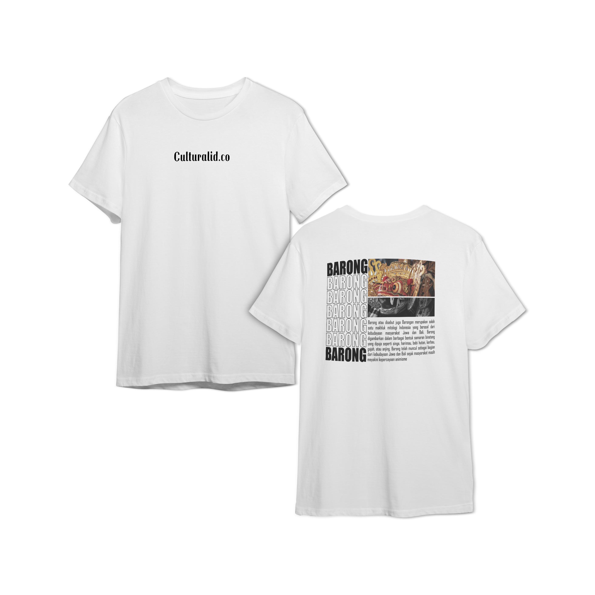

Barong

Barong atau disebut juga Barongan merupakan salah satu makhluk mitologi Indonesia yang berasal dari kebudayaan masyarakat Jawa dan Bali. Barong digambarkan dalam berbagai bentuk samaran binatang yang dipuja seperti singa, harimau, babi hutan, kerbau, gajah, atau anjing. Barong telah muncul sebagai bagian dari kebudayaan Jawa dan Bali sejak masyarakat masih meyakini kepercayaan animisme.